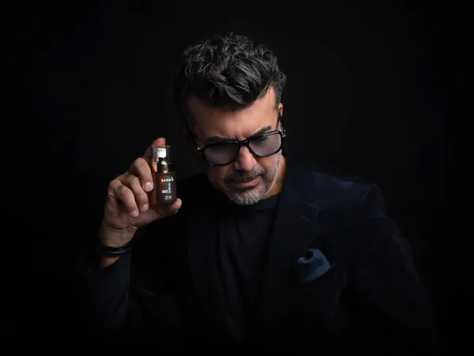

Jetzt 10% sparen – Code SKINFOOD26
Versandkostenfrei in Deutschland & ÖsterreichVersandkostenfrei DE & AT
Nicht jede Pflege ist gleich. So unterscheidet sich SANNIS von herkömmlicher Kosmetik.
Parabene, Silikone, Mineralöle. Kurzfristig glatt, langfristig belastend für deine Haut.
Lange Lieferketten, unklare Herkunft, oft raffiniert und nährstoffarm.
Kaltgepresst unter 29 °C, Bio Austria zertifiziert, reich an rein pflanzlichen Omega-3. Direkt aus der Alpenregion.
Transparenz statt Werbeversprechen. Jedes Produkt basiert auf unserer Bio-Leinöl-Formel.
Keine Kompromisse. Keine Greenwashing-Versprechen. Geprüfte Naturkosmetik aus eigener Manufaktur.
Die Tagescreme zieht schnell ein und hinterlässt ein angenehm geschmeidiges Hautgefühl. Sehr zufrieden!
Das Bartöl duftet dezent und pflegt Bart und Haut spürbar. Endlich eine natürliche Alternative.
Endlich Hautpflege ohne Plastik und Chemie. Die Nachtcreme ist reichhaltig und fühlt sich wunderbar an.
Ich verwende das Leinöl schon lange – jetzt auch die Hautpflege. Gleiche Qualität, super Ergebnis.
Die Handcreme ist perfekt für den Winter. Pflegt intensiv und zieht trotzdem schnell ein.
Bio, vegan, aus Österreich – und es funktioniert. Das Reinigungsöl ist sanft und gründlich zugleich.
"Für unsere Skin Food Produkte verwenden wir genau das Bio-Leinöl, das unsere Kund:innen seit Jahren täglich für ihre Omega-3-Routine nutzen – pur, im Müsli oder im Salat."
Drei Routinen, eine Philosophie: rein pflanzliche Pflege, die deine Haut nährt.
Frisch und gepflegt in den Tag starten.
Über Nacht für spürbar geschmeidige Haut.

Gepflegter Bart, geschmeidige Haut darunter.
Die SANNIS Bio-Kosmetik Linie, eine Formel: Bio-Leinöl als Basis für reichhaltige, pflanzliche Pflege.

Tiefenpflegendes Bart- & Gesichtsöl. Edle Duftnoten von Sandelholz, Benzoe und Rosmarin. 30 ml.